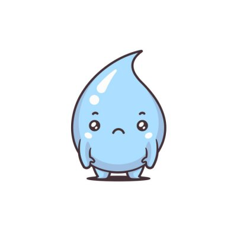

Males que a falta de agua faz para o nosso corpo
Piora da memória e do raciocínio
Envelhecimento da pele
Mau halito
Queda no desempenho escolar
Dificuldade para perder peso
Cansaço diario
Dor de cabeça

Piora da memória e do raciocínio
Envelhecimento da pele
Mau halito
Queda no desempenho escolar
Dificuldade para perder peso
Cansaço diario
Dor de cabeça
Auxilia o bom funcionamento dos rins
Limpa o organismo
Ajuda a não reter líquidos
Regulador térmico
Desintoxica o organismo
Aumenta massa muscular
Combate o envelhecimento
Ajuda a emagrecer
Contra a constipação
Fundamental para a saúde

Doença que pode atingir até 15% da população mundial
Aproximadamente, duas vezes mais comum nos homens do que nas mulheres.
5% dos cálculos renais podem estar associados a infecções urinárias
Estima-se que 1 em cada 10 pessoas no Brasil sofra de cálculo renal.
Mais comum entre adultos jovens, entre os 20 a 35 anos